Laser and Vinyl Cutting
3D printing
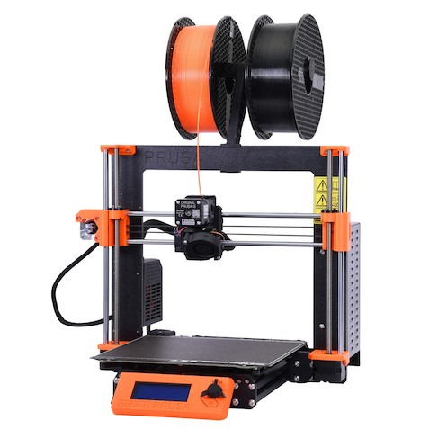Project description
The objective of this project was to use a design software to make soemthing that could not be made subtractively, and 3D print that design with maximum of 100g of material.
Workload
| What was done | Time spent[hours] |
|---|---|
| Deciding what to make | 1 |
| Designing and drawing | 2 |
| Preparing design for printing | 1 |
| Printing | 7 (Idle) |
| Documentation | 6 |
| Total work | 10 hours + 7 idle hours |
Preparation
Like in the previous project I used Autodesk Fusion360 to draw my design.Deciding what to draw
I wanted to design something I would use in my everyday life, and decided to make a phone holder. I googled designs and decided to make one similar to this one below,
without having it adjustable.
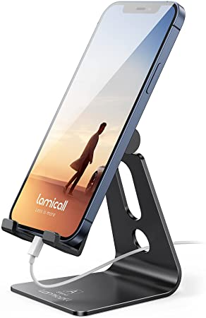
Designing the phone holder
I started with just the base and made just a rectangle with the filleted corners: 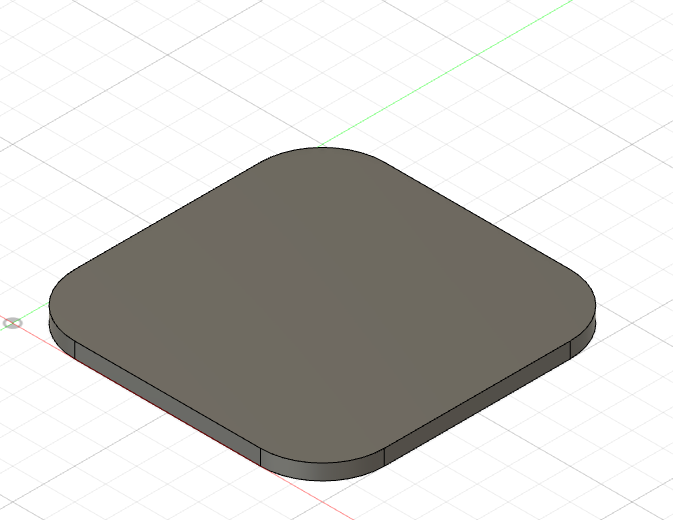Then I made a plain at an angle and drew a rectangle at that angle 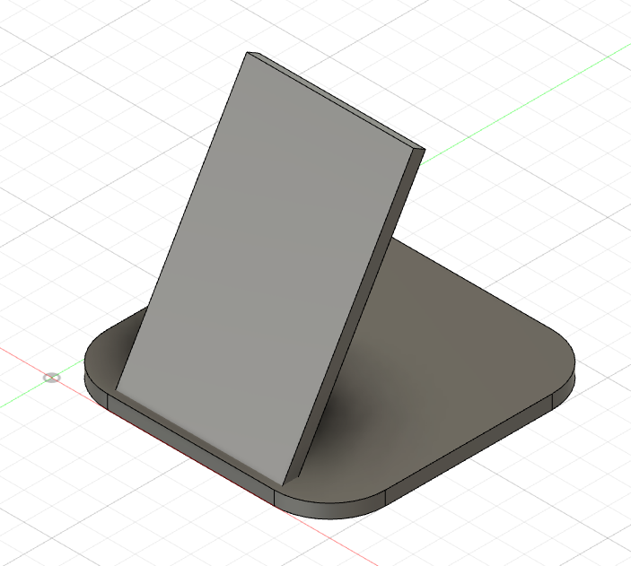
Then I added another plane at a new angle and drew the wall the phone needed to rest on as well as the parts that held the phone.
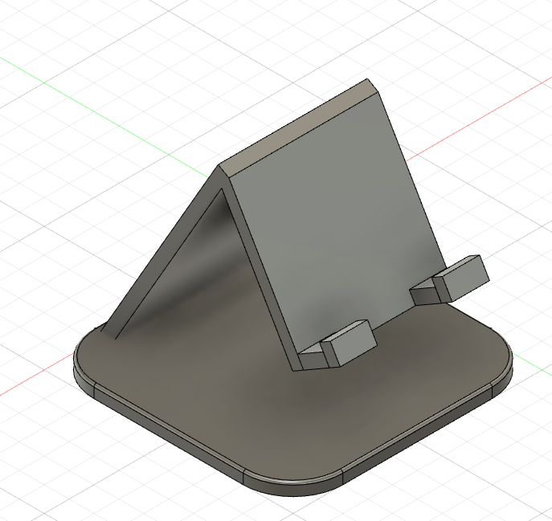
To finish I just filleted the corners and added a hole in the first wall, both for looks as well as making it lighter. So the final look can be seen down below. 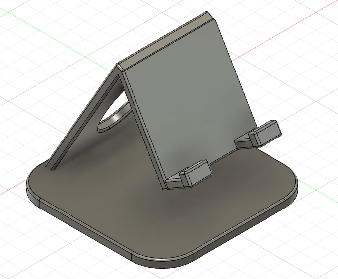
Printing
Now that I had finished designing I saved the project as a stl file, put it on a USB key and plugged it into the computer with the 3D printing software. These are the settings I used and this is how it looked on the software.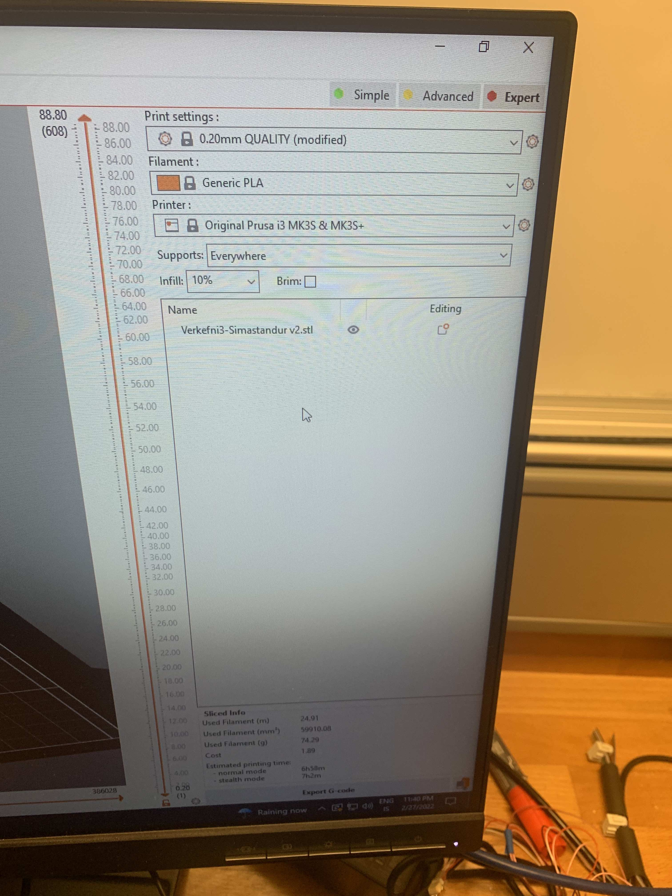
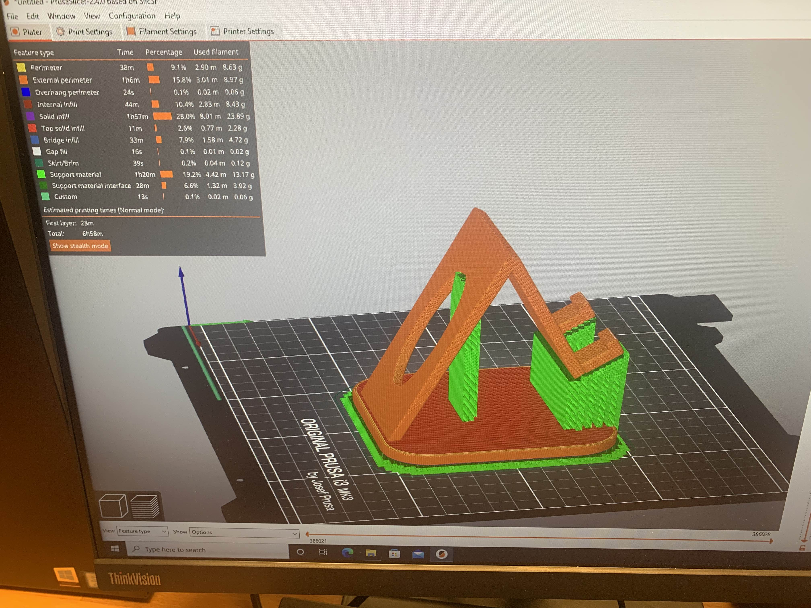
Now I saved it and put it into an SD card which I plugged into the printer. The printer I used is PRUSA i3 mk3, the print time was around 7 hours and the weight was 95g. I started to print it and came back the next morning when it had finished. 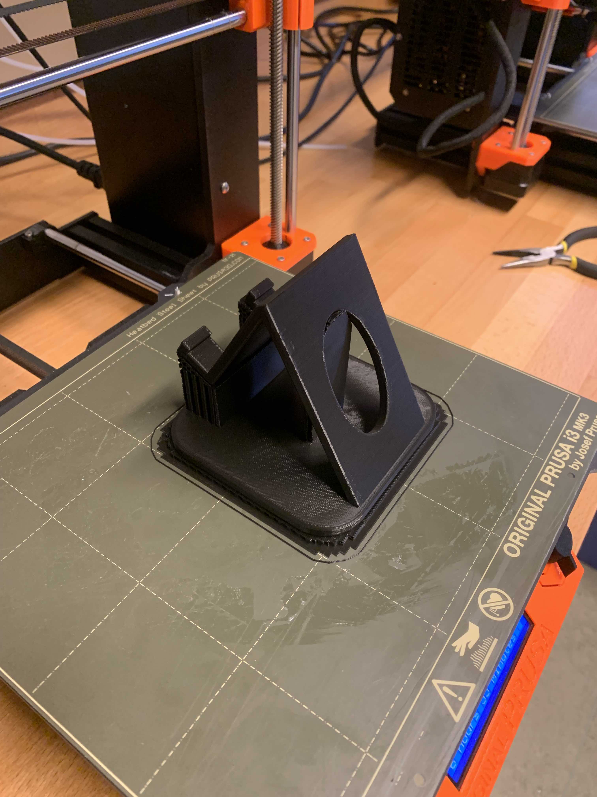
It looked great and worked really well. Below are pictures of the phone stand with a phone both vertically and horizontally and as you can see it fits really well. 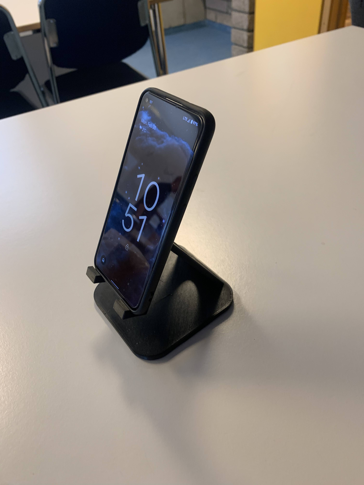
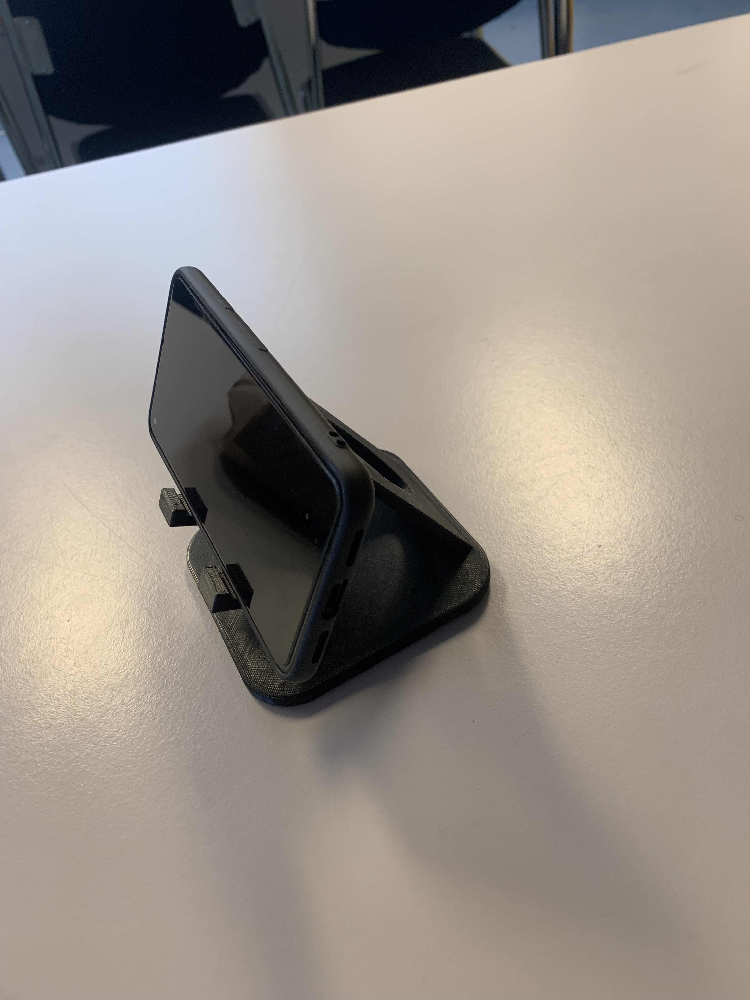
Results
I was very happy with the look of the stand. I had done a test of the overhang the printer could handle and decided to use supports when printing it which I then peeled off afterwards. To see the overhang test you can click on the link below:Printer test.
The printer test showed that it couldn't print unsopported overhang exceeding around 60°. The bridging test showed that the printer can print a good amount of material in a 90° direction. Since my design had an overhang exceeding 60°, I decided to use the supports.
Below you can download the stl and the f3d files to make the phone stand yourselves.


3D scanning
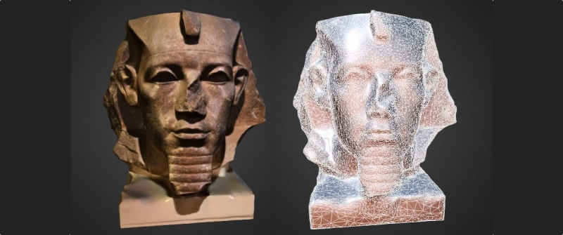Project description
The second part of this project was to 3D scan an object with photogrammetry.Workload
| What was done | Time spent[hours] |
|---|---|
| Learning about 3D scanning | 1,5 |
| Scanning and processing | 0,5 |
| Documentation | 2 |
| Total work | 4 hours |
Preperation
I decided to 3D scan a miniature boat that I have in my room. Here you can see a picture of the boat: 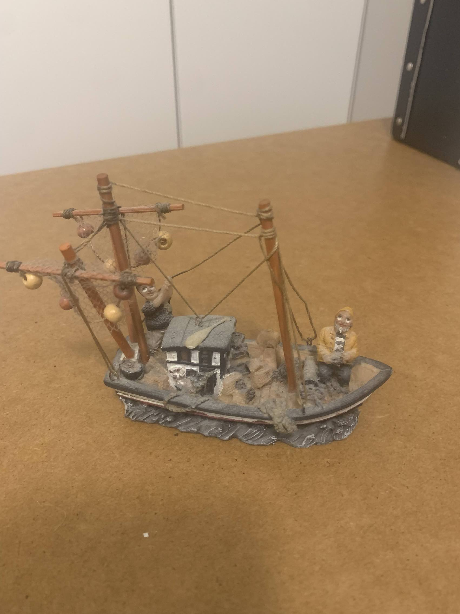 I downloaded an app called Polycam, to go to their website click the link belowPolycam
Results
I only had my phone to take pictures and the camera isn't that good but I still decided to try it.The app is really straightforward to use, all you need to do is take pictures of the object and the app does the rest. I took the pictures and started processing. Below you can see the results. Even though the boat is blurry in some places and some details look off I like the overall result. You can definitely see it's a boat and all the main parts are there. It's mainly the sails and the strings that are a bit off but I'm sure that with a better camera the results would be even better.
I'm only using the free version of the app which has limited capabilities but for a few dollars you can buy a pro access to Polycam where you can export to DXF and STL for example which can be opened by Fusion360 where you can repair some defects and then 3D print the object. For now the free version is enough for me though.